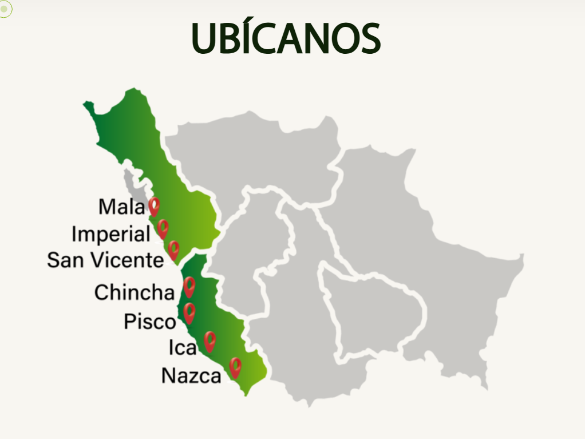
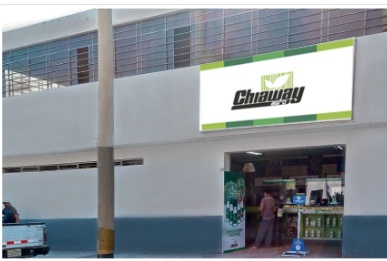
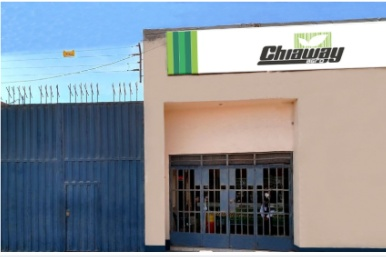
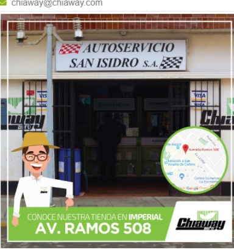
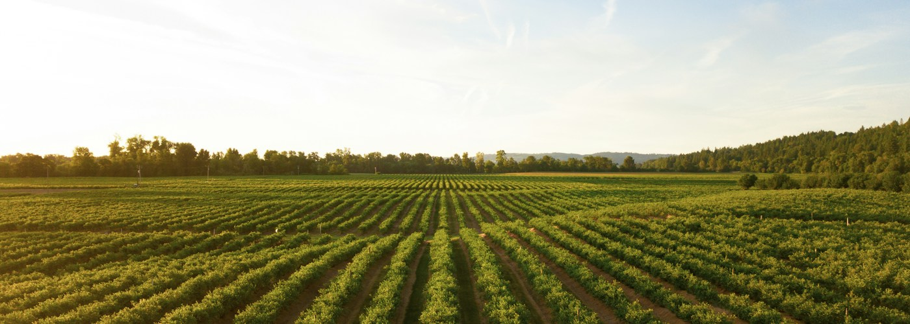

Autoservicio San Isidro S.A.
Distribución de agroquímicos autorizados por SENASA, nutrición vegetal y bioinsumos. Si detectas plagas o manchas en tus hojas, nuestra Inteligencia Artificial AgroVisión diagnostica tu planta al instante y te recomienda el tratamiento exacto en tienda.
Liderando la provisión de insumos en el agro peruano.
Centros de atención y despacho a nivel nacional.
Hectáreas asesoradas con trazabilidad garantizada.
 ⚡ Analizando Tejido Vegetal...
⚡ Analizando Tejido Vegetal...
Recomendación técnica con insumos registrados en SENASA y dosis exacta.
Más de 5 décadas impulsando la sanidad vegetal, productividad y rentabilidad del agricultor en el Perú.
Iniciamos en los años 70 en Ica y evolucionamos junto al agro peruano. Hoy, Autoservicio San Isidro S.A. (CHIAWAY) es una de las principales redes de distribución fitosanitaria en la costa sur.
Atención integral, repuestos y lubricantes.
Maquinaria y bombas de agua para valles de Ica.
Insumos SENASA y diagnóstico con AgroVisión AI.
"Atender a nuestros clientes con productos y servicios que le permitan obtener una buena cosecha."
"Ser la cadena de tiendas con mayor cobertura nacional para atender todas las necesidades del agro."
Catálogo completo de fungicidas, insecticidas, acaricidas y bioinsumos autorizados con disponibilidad inmediata en nuestras sedes.
Contamos con 8 puntos de venta estratégicos en la zona sur del país para atender eficientemente a Agroindustrias, Mediana y Pequeña Agricultura.

Nuestra red de tiendas y almacenes autorizados por SENASA nos permite brindar asesoramiento técnico in-situ y entrega inmediata en Lima Provincias y la Región Ica:







